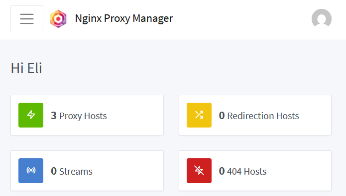
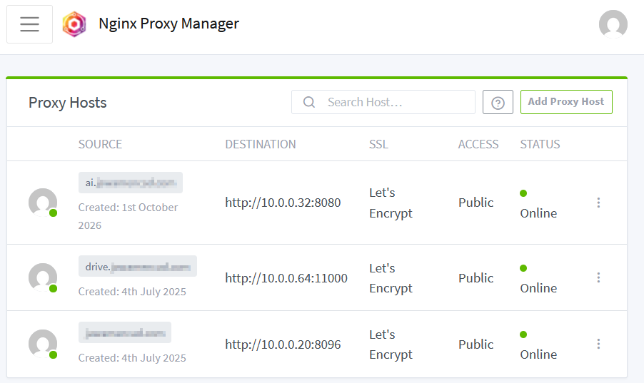
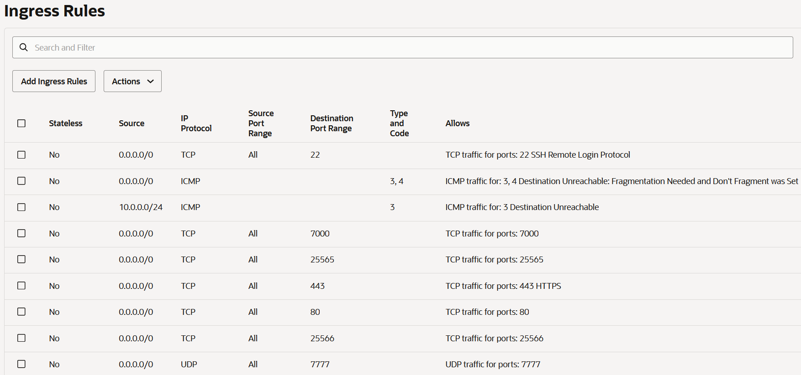
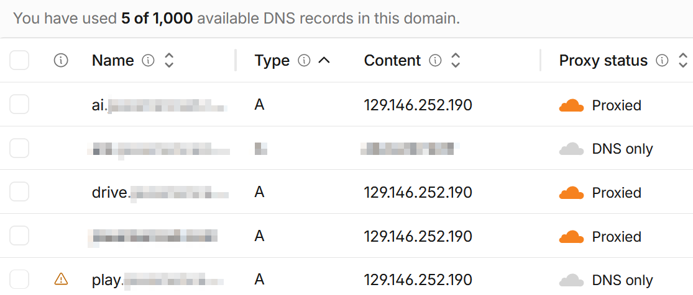

Why?
I had all of my services — Nextcloud, AMP, Proxmox, a Minecraft server, and more — running on my home network (or wanted to be ran). The only way to reach them from outside was to start punching holes in my home router with individual port forward rules for every single service, which meant more open ports, more attack surface, and a lot of clutter on the router. I wanted a single, clean public entry point where I could type a friendly subdomain and land on the right service over HTTPS, without my home router ever needing to expose a single port. I also wanted one place to manage TLS certificates instead of juggling them per service.

Nginx Proxy Manager Dashboard

Overview of Proxy Hosts List in NPM

Overview of Ingress Rules for the VNC in Oracle Cloud

Cloudflare DNS A records for each service subdomain
What does it do?
Nginx Proxy Manager (NPM) is running as a container on my Proxmox server at home. It is the reverse proxy for everything — Nextcloud, Jellyfin, Open WebUI, or any other service I want to reach from outside. NPM handles the TLS termination with Let's Encrypt certificates, so each site gets a valid HTTPS connection and I only manage renewals in one place.
The tricky part is getting public traffic to NPM without opening ports on my home router. That is where Oracle Cloud comes in. I have a constantly running instance sitting in a Virtual Cloud Network (VNC) with security rules that only allow the ports I actually need — 80, 443, and 25565 for Minecraft. A persistent tunnel carries the traffic from that Oracle Cloud instance straight into my home network and straight into NPM. From the public internet's perspective the only exposed endpoint is the Oracle Cloud IP behind the VNC security rules; my home router has zero port forwards and nothing open.
Cloudflare manages my domain's DNS. I have A records for each
subdomain — nextcloud.example.com,
amp.example.com, play.example.com, and so
on — all pointing at the Oracle Cloud public IP. When a request
arrives, NPM reads the subdomain from the Host header
and uses that to decide which internal service to hand it off to.
The best part about all three of these services is they all function
on a free plan or just don't have any costs associated with them.
In simpler terms, it is the front door to my entire homelab. Cloudflare answers the DNS lookup, Oracle Cloud's VNC acts as the gatekeeper that decides which ports are even allowed through, NPM terminates the certificate and routes by subdomain, and the request lands on the right service at home — all without a single port open on my own router.
What did I learn?
Setting this up taught me how a full public request chain works
end to end: a browser asks Cloudflare for the subdomain's IP, the
request hits the Oracle Cloud instance, the VNC security rules
decide whether the port is even allowed, the tunnel carries it back
to my home network, and NPM reads the Host header to
route it to the right backend. Understanding each of those layers
separately is one thing, but watching connection logs and seeing
different international IPs pinging me at least once per second
is another. After seeing those attempts I decided to set up essentially
a whitelist that only allows US IPs, as well as temporarily blacklisting
IPs that repeatedly attempt to connect.
I got comfortable writing and reading Nginx config —
server blocks, location directives,
proxy_pass, and the proxy headers
(X-Forwarded-For, X-Forwarded-Proto,
Host) that make backends like AMP and Nextcloud see
the real client IP and know the original request was HTTPS.
I also learned how Oracle Cloud's VNC and security lists work as a
network-level firewall, and how to keep Cloudflare DNS A records in
sync when I spin a new service up or tear one down. Managing
Let's Encrypt certificates through NPM, reading Nginx access and
error logs to trace a request through the chain, and keeping the
tunnel alive across reboots all came from actually living with this
setup day to day.
Video Demonstrating Roughly What I Did
(I really WISH I knew about this when I was setting it up)
Read more about Nginx Proxy Manager